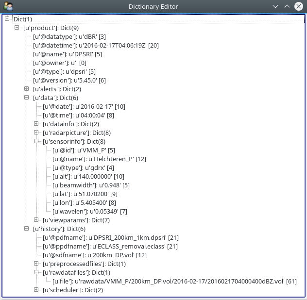

All Posts
wradlib moves forward
- 10 February 2023
- news
As you probably all know by now, \(\omega radlib\) is moving forward now and in the near future. There are several aspects which are laid out in this blog post.
In the upcoming version 1.19 \(\omega radlib\) will use xradar for reading/writing radar data. For this to happen, I’ve ported all related code from \(\omega radlib\) to xradar. Xradar, a package dedicated to read and write radar data based on xarray structures, was launched in late August 2022, on initiative of Max Grover and me.
Release 1.15
- 11 April 2022
- news
We have now released version 1.15 of wradlib.
This release only has one enhancement:
Release 1.14
- 18 March 2022
- news
We have now released version 1.14 of wradlib.
Now, these are the most important changes:
Release 1.13
- 14 November 2021
- news
We have now released version 1.13 of wradlib.
After missing requirements_optional.txt in the source distribution which has been uploaded to PyPI as 1.12.0, we had to remove this version from PyPI again. The problem was that the installation from the source distribution was not possible without this file.
Release 1.11
- 02 September 2021
- news
We have now released version 1.11 of wradlib.
This version contains two enhancements and a whole bunch of bugfixes. We changed our branch naming to main.
Release 1.10
- 01 June 2021
- news
We have now released version 1.10 of wradlib.
This version contains several enhancements and some bugfixes. For our Continuous Integration we’ve moved to GitHub Actions for all of our production repositories.
Release 1.9
- 26 November 2020
- news
We have now released version 1.9 of wradlib.
This version contains several bugfixes and some enhancements. For our Continuous Integration we’ve moved to micromamba which speeds up creation of Python environments.
Release 1.8
- 03 September 2020
- news
We have now released version 1.8 of wradlib.
This version contains several bugfixes and enhancements. We’ve also done a lot of maintenance with regard to Continuous Integration as well as handled upstream deprecations.
Release 1.7
- 12 June 2020
- news
We have now released version 1.7 of wradlib.
This version contains several bugfixes and enhancements.
Release 1.6
- 12 March 2020
- news
We have now released version 1.6 of wradlib.
This version contains several bugfixes and enhancements.
Release 1.5
- 02 August 2019
- news
We have now released version 1.5 of wradlib.
This version contains several bugfixes and enhancements.
Release 1.4
- 24 May 2019
- news
We have now released version 1.4 of wradlib.
This version contains several bugfixes and three enhancements.
Release 1.3
- 29 March 2019
- news
We have now released version 1.3 of wradlib.
This version contains more improvements and enhancements than bugfixes.
Utilizing xarray for CfRadial - ODIM_H5 interoperability
- 15 February 2019
- news
We have just added a new feature for CfRadial2 - ODIM_H5 interoperability to wradlib.
wradlib is now able to read data from netcdf-based CfRadial1, CfRadial2 and hdf5-based ODIM_H5 (and other hdf5-flavours (GAMIC)).
Release 1.2
- 31 October 2018
- news
We have now released version 1.2 of wradlib.
This version contains many bugfixes as well as improvements and enhancements. Most additions were pulled in within Hacktoberfest, the month-long celebration of open source software. Although this years Hacktoberfest is over, we encourage every \(\omega radlib\) user to join the party and envision the Hacktoberfest’s 3 main mottos:
Release 1.0.0
- 01 April 2018
- news
We have now released version 1.0.0 of wradlib.
As some of you might be aware, version 1.x is generally considered as a major milestone, indicating that the software has all major features, and is considered reliable enough for general release.
Release 0.11.0
- 15 November 2017
- news
We are happy to announce the release of \(\omega radlib\) 0.11.0.
It introduces our first shot at reading IRIS (Sigmet) data - a feature that has been requested by quite a number users. Learn more about io.read_iris, and see it at work here. We are looking forward to your feedback!
Introducing {{wradlib}} Cheat-Sheets
- 21 September 2017
- wradlib
Today we are glad to announce the start of a series of Cheat-Sheets covering all aspects of wradlib. The first Cheat-Sheet is Wradlib Getting Started which is available via the new Downloads-Section.
Cheat-Sheets are very well established not only within the Python-Community. Who of us has not used the GitHub Git Cheat Sheet or the CONDA Cheat Sheet to get git and conda running?
Release 0.10.1
- 23 June 2017
- news
We are happy to announce the release of \(\omega radlib\) 0.10.1.
This release is mainly a bug-fix release to make \(\omega radlib\) work with the latest numpy release 1.13.
Release 0.10.0
- 10 April 2017
- news
We are happy to announce the release of \(\omega radlib\) 0.10.0.
Highlight of this release is the implementation of matching of GPM/TRMM-platforms with ground radar observations in 3D. A step-by-step guide is available as jupyter notebook. Also the \(\omega radlib\) raster handling has been improved considerably with PR#137.
Release 0.9.0
- 31 August 2016
- news
With this post, we announce the release of \(\omega radlib\) 0.9.0. It finalizes our transition from example Python scripts to jupyter notebooks (as already announced in a previous post). As a result, the documentation pages have become more consistent, and the handling of examples and tutorials more convenient and interactive. We hope you’ll agree!
As a consequence, the previous doc sections “Tutorials” and “Recipes” have been replaced by one single section Tutorials and Examples. The pages in that section were automatically built from jupyter (IPython) notebooks. These notebooks are distributed with the new release, and you can use them to interactively browse through our tutorials and examples. You can always download the latest notebooks from the wradlib repository.
introducing {{wradlib}} jupyter notebooks
- 26 April 2016
- wradlib
At a \(\omega radlib\) code-sprint early April, we thought about ways to make \(\omega radlib\) examples and tutorials more user-friendly, interactive and consistent.
Therefore, we decided to harmonise online tutorials and recipes together with the examples from the source distribution. All of them will be transformed as ready-to-use jupyter notebooks. These notebooks will be distributed along with wradlib, but they will also be rendered as tutorials/examples in the online documentation. In this ongoing process, all examples and tutorials will be reviewed and restructured if needed.
easy install using conda-forge
- 17 March 2016
- wradlib
With the help of an outstanding community effort named conda-forge, wradlib can now be more conveniently installed on linux, windows and osx.
Until now, installing \(\omega radlib\) and its dependencies could be tricky, with each OS having its own issues. On Windows, we so far recommended to satisfy all depencies via Python(x,y). This was convenient; however, it limited users to Python 2.7, and, more importantly, to 32-bit Python. This was a serious drawback particularly for memory-intensive applications.
Simple Treeview with traits
- 11 March 2016
- prog
Since we are continuously receiving inquiries regarding the work with Rainbow5(TM) radar data, I will present here a nice way of visualizing the dictionary representation of an arbitrary Rainbow5 file.
This code snippet makes use of the python packages traits and traitsui.
Release 0.8.0
- 10 March 2016
- news
As already announced in previous articles (#1, #2), we entirely moved our code development from bitbucket to github, and applied a major code revision to make \(\omega radlib\) compatible with both Python 2.7 and 3.5. The tremendous efforts to achieve this have been spearheaded by Kai Muehlbauer (University of Bonn). Thanks also to Jonathan J. Helmus from Argonne National Laboratory for valuable advice in the transition period.
Please understand that the bitbucket repository will no longer be updated, and only hosted as legacy code.
wradlib goes toward python3
- 29 February 2016
- news
With Pull Request #5 we made the first step to have \(\omega radlib\) support Python3. All tests are running fine now, so we consider this a straight conversion. Nevertheless, there is an open issue which gets hold of remaining conversion problems. If you find a bug or issue, please report it there.
wradlib moves to github.com
- 29 February 2016
- news
After over a year of reflection and thoughts, we finally decided to move from bitbucket to github.
This means also to switch the versioning system from mercurial to git. The repository was transferred to git via hg-git. Thus, the commit history is available right from the beginning. The wradlib repo at bitbucket will be left available for reference.